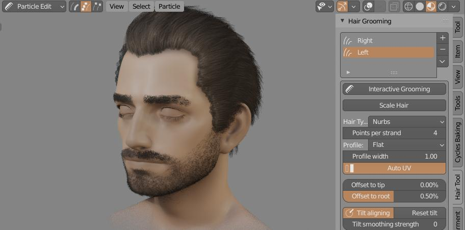
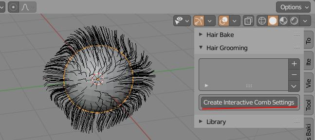

Interactive hair Grooming:¶
It best used for short, dense hair that should cover big areas uniformly (for long hair I would use 'Curves from grid surface' function - as it provides easier way guide hair IMO).
 Hair Grooming - panel is located in right UI Sidebar: "Hair Tool" tab (visible only in 'Particle Edit' mode)
To use interactive grooming, you have to be in 'Particle Edit' mode (add 'Particle System' modifier first)
To start grooming and generate curve ribbons:
- open right sidebar(N) in 3D View -> go to 'Hair Tool' Tab and press 'Create Interactive Comb Settings' button.
- You will see Grooming Panel with all the settings. Click 'Interactive Grooming' button to start the modeling session.

Note: Each particle system has its own separate comb settings. This gives you more control over hair look. But if you want you can copy settings from one Groom settings to another using down arrow menu.
Curve hair will be interactively updated as soon as you release your Left Mouse Button. Generated curve ribbons, will use same name as source particle system. You can pause and resume hair grooming at any time. The generated curve ribbons will be updated - as long as you wont change the name of generated hair.
Parameters:¶
- Strand width - curve ribbons width
 * Points per strand - How many points generate for each spline*
* Points per strand - How many points generate for each spline*
 Offset to tip - Move spline points more toward tip
Offset to tip - Move spline points more toward tip
 * Offset to root - Move spline points more toward root*
* Offset to root - Move spline points more toward root*
 * Align tilt - Align ribbons tilt to surface*
* Align tilt - Align ribbons tilt to surface*
 * Embed Roots Depth - Embed strands roots into mesh surface*
* Embed Roots Depth - Embed strands roots into mesh surface*
- Strand Smoothing - smooth generated strands (may be slow for dense hair)
- Generate children - Generate child hair strands. They will be guided by parent strands (particle hair)
- Include Parent Strands - Include parent strands when generating hair with children
- Parent strands overlay - Draw orange overlay on top of parent strands, for better visibility on dense hair (Draw Offset controls bias of overlay toward camera)
 * Child count - Amount of generated children strands*
* Child count - Amount of generated children strands*
 * Placement Jittering - Randomize child strands placement*
* Placement Jittering - Randomize child strands placement*
 * Randomize length - Randomize strands length*
* Randomize length - Randomize strands length*
 * Scale Particle Hair - Change particle hair length (and generated curve ribbons length as an result too)*
* Scale Particle Hair - Change particle hair length (and generated curve ribbons length as an result too)*
 * Randomize Rotation - Randomize rotation of generated curve ribbons*
* Randomize Rotation - Randomize rotation of generated curve ribbons*
Vertex Groups:¶
With vertex groups you can control child strands:
- density
- length
- random rotation strength
- strand radius (ribbon width)
 You can use particle system Density mask to control where child strands will be generated
You can use particle system Density mask to control where child strands will be generated
Fixing intersections:¶
Often when you want to make hairstyle with a parting you may encounter problem of child particles intersecting with head on split border line - see image (B) below.

Best way to fix it is to split particle system into two parts - Left and Right:
- select particle hair object -> Ctrl + Shift + H -> Particle hair to curves
- then split generated curves into two objects - Left and Right
- attach Left and Right curve objects to head using - 'Particle hair from Curves', as two separate particle systems.
- create 2 density vertex groups for left and right particle hair system and you are done. You can comb left and right part independently with clean hair parting.